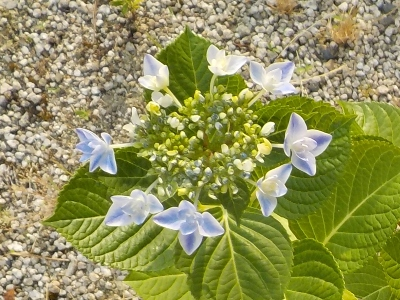
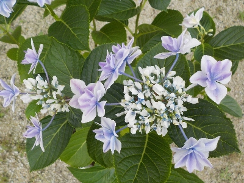
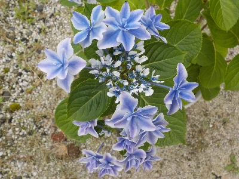
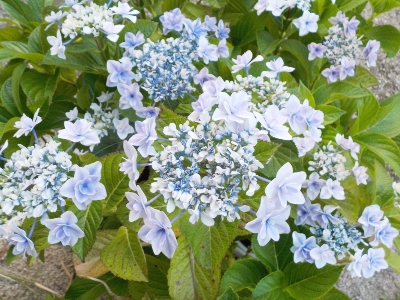

まだ色が薄いですが、銀河が見頃になりました。
更新日 : 2024/06/16

園芸店やよそのお宅でいろんな種類のアジサイが咲いてて、いいなーと思いながら見ています。
でも我が家は今ある種類だけでいいと思ってます。
更新日 : 2024/06/16

園芸店やよそのお宅でいろんな種類のアジサイが咲いてて、いいなーと思いながら見ています。
でも我が家は今ある種類だけでいいと思ってます。
更新日 : 2024/07/01

色が濃くなりました。

同じ土を使いましたが、こっちは配合が違ったみたいで青が鮮やかです。
両方ともとってもキレイ。
更新日 : 2026/06/28

花がいっぱいあると豪華でいいですね。
ちょっと白っぽくなって花が目立たないので、緑の葉っぱは必要だなとも思いました。
銀河は普通にキレイ。